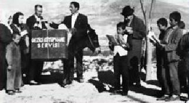

Yıl 1943, genç Mustafa'nın tayini kütüphaneci olarak Ürgüp Tahsin Ağa Kütüphanesi'ne çıkar. Devlet memurluğu o dönemde süper bir şey, çünkü özel sektör falan yok. Bizimki kütüphanede heyecanla okurları bekler; bir gün olur, beş gün olur, gelen giden yok. Etraftakilerle konuşur, herkese anlatır: "Bakın kütüphane bomboş duruyor, gelin kitap okuyun." Gelen giden olmaz. Amirlerine durumu bildirir.
– Kardeşim otur oturduğun yerde, maaşını düzenli alıyon mu, almıyon mu?
– Alıyorum.
– Eee, o zaman ne karıştırıyon ortalığı, gelen giden olsa maaşın mı artacak? Başına daha fazla bela alacan, o kütüphaneye yıllardır kimse gelmez zaten.
23 yaşındaki genç memur "Ne yapayım, ne yapayım?" diye düşünür durur. Sonunda aklına bir fikir gelir, eşine söyler. Eşi önce "Deli misin bey?" der, ama kocasının bir şeyler üretme, işe yarama çabasını yakından görünce fikri kabullenir.
O dönem devletteki amirlerinin çıkardığı tüm engellerin tek tek, binbir güçlükle üstesinden gelir. Çünkü o zaman da şimdiki gibi, "Aman bir şey yapmayalım da başımıza bir iş gelmesin. Çalışsan da aynı maaş, çalışmasan da" zihniyeti aynen var.
O bıyıklı, kravatlı, asık yüzlü, sigara kokan, arkalarındaki Atatürk resminden utanmayan, ama ülkesine gram faydası olmayan bürokratları zorlukla ikna eder ve bir eşek alır. İki tane de sandık yaptırır. İki sandığa, kalınlıklarına göre toplam 180-200 kitap sığar. Sandıkların üstüne "Kitap İare[1] Sandığı" yazar.
Kitapları eşeğe yükler ve köy köy gezmeye başlar.
Kütüphaneye de bir yazı asar: "Sadece pazartesi ve cuma günleri açıyoruz."
Köydeki çocuklar şaşırır.
Eşeğe bir sürü kitap yüklemiş bir amca, o gariban çocukların küçücük ellerine kitapları verir.
Düşünün, Noel Baba gibi.

Noel Baba yalan, Mustafa Amca ise gerçek.
Geyikler yerine eşeği var.
Eşek de daha gerçek, Mustafa Amca da.
– Çocuklar bunları okuyun, aranızda da değişin. On beş gün sonra aynı gün gelip alacağım. Aman yıpratmayın, diğer köylerdeki arkadaşlarınız da okuyacak" der.
Mustafa artık Ürgüp'teki kütüphanede bir iki gün durmakta, diğer günler eşeği ile köy köy gezmektedir. Köylerdeki çocuklar Eşekli Kütüphaneciyi her seferinde alkışlarla karşılarlar. Kalpleri küt küt atar heyecandan, sevinç içinde yeni kitapları beklerler. Mustafa Amca‘nın ünü etrafa yayılır. Diğer devlet memurları makam odalarında sıcak sıcak oturup iş yapmazken, Mustafa'nın eşeği yediği otu hepsinden fazla hak etmektedir.
Zamanla insanlar kütüphaneye de gelmeye başlar. Mustafa bakar ki kütüphaneye kadınlar hiç gelmiyor. Zenith ve Singer'e mektup yazar: "Bana dikiş makinesi yollayın, firmanızın adını kütüphanenin girişine kocaman yazayım" der. Zenith dokuz tane, Singer bir tane dikiş makinesi yollar (ilk sponsorluk faaliyeti). Salı günlerini kadınlar günü yapar. Kumaşı alan kadın kütüphaneye koşar. On makine yetmediği için sıra oluşur. Sırada bekleyen kadınların eline birer kitap verir, beklerken okusunlar diye. Okuma-yazma oranının düşüklüğünü görünce halkevlerine okuma yazma kursları vermeye gider. Halıcılık kursları başlatır, bölgede halıcılığı canlandırır. Bu arada valilik Mustafa hakkında dava açar, "kendi görev tanımı dışında davranıyor" diye. 50 yaşına gelen Mustafa Amca baskıyla emekli edilir.
Mustafa Amca köylüler arasında efsane olur, yıllar geçtikçe köylerdeki çocuklarda okuma aşkı yerleşir. 2005 yılında Mustafa Amca vefat eder.